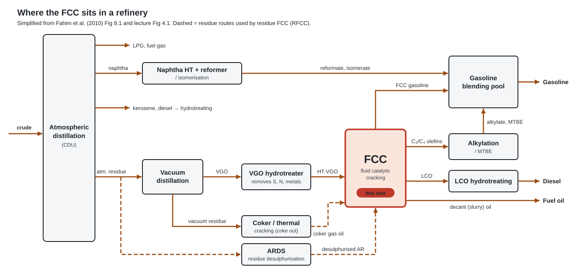
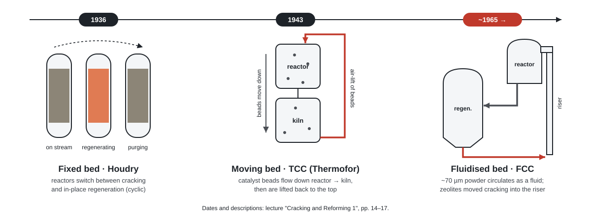
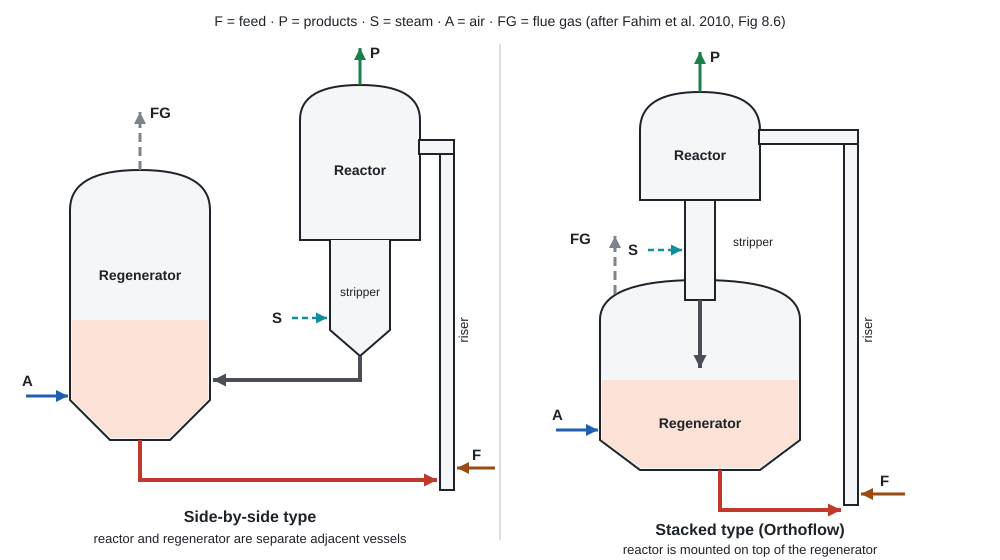

Chapter 01 · the unit and its types
What the FCC unit is
Definition, role in the refinery, thermal vs catalytic, and the types from Houdry's fixed beds to riser units.
1.1What catalytic cracking is
- Cracking: large, high-boiling HC → smaller, lighter ones. Heat alone = thermal cracking (pyrolysis); with a catalyst = catalytic. Lp. 2
- Catalytic cracking: acidic catalyst, carbenium-ion mechanism (not free radicals). Most widely used route from heavy oil to high-octane gasoline. Lp. 9
- FCC: ~70 µm powder that flows like a fluid when aerated; circulates reactor ⇄ regenerator and carries heat. Lp. 16
- "Heart of the refinery": VGO → gasoline + C₃/C₄ olefins (alkylation feed). Bp. 199
- Endothermic; heat comes from burning coke off the catalyst in the regenerator. Bp. 199
One-line definition (exam)
Continuous cracking of preheated heavy gas oil over circulating fluidised zeolite in a riser at 480–550 °C, 1–5 bar, a few seconds → high-octane gasoline, LPG olefins, cycle oils; coke is burned in a regenerator, which supplies the heat of reaction. Bpp. 199, 208, 210
1.2Objective and role in the refinery

- Objective: heavy, low-value gas oil → lighter, high-value products, mainly high-octane gasoline. Bp. 200
- Olefin supplier: C₃=/C₄=/C₅= → alkylation, MTBE; some units are petrochemical (UOP Petro-FCC). Bp. 200
- Secondary (conversion) process, vs primary fractionation; upgrades heavy ends. Lp. 14
- Residue upgrading: desulphurised AR/VR feed → residue FCC (RFCC). Bp. 199
- Downstream: products may be hydrocracked or alkylated (better anti-knock). Lp. 15
1.3Thermal vs catalytic cracking
| Aspect | Thermal | Catalytic (FCC) |
|---|---|---|
| Agent | Heat only Lp. 2 | Heat + acid catalyst Lp. 9 |
| Mechanism | Free radicals: \(\ce{RCH2-CH3 -> RCH2^{.} + CH3^{.}}\) Lp. 3 | Carbenium ions on acid sites Lp. 9 |
| Temperature | Visbreaking 425–460 °C; thermal cracking 460–520 °C LTab 4.1 | 480–550 °C Bp. 208 |
| Products | Olefins re-crack to diolefins/alkynes; more unsaturation Lp. 3 | More stable, saturated Lp. 9 |
| Shape | Mostly straight chains | Branched (ions rearrange to 3°) Lpp. 11–12 |
| Gas | Light: CH₄, C₂, H₂ Lp. 3 | Rich in C₃, C₄ Lp. 11 |
| Octane | Lower | High: iso-paraffins + aromatics Lp. 9 Bp. 209 |
1.4Types of catalytic cracking (by catalyst bed)

| Type | Examples | Catalyst | Regeneration | History |
|---|---|---|---|---|
| Fixed bed | Houdry | Fixed beds, several reactors | Cyclic: each reactor alternates cracking / in-place regen | Commercialised late 1930s: Sun Oil, Paulsboro, June 1936 (3 reactors, 2,000 b/d); Marcus Hook 12,000 b/d, 1937 Lp. 15 |
| Moving bed | TCC (Thermofor), air-lift TCC | Beads | Beads flow reactor → kiln, lifted back | Pilot 1941; 20,000 b/d at Magnolia, Beaumont, 1943 Lp. 15 |
| Fluidised bed | UOP, Texaco, Kellogg (Orthoflow), Exxon Flexicracking | ~70 µm powder | Continuous circulation | Standard today; >60 years in use Lp. 14 Bp. 199 |
Common to all
Hot oil meets catalyst → coke deactivates it → catalyst/vapour separated → adsorbed oil steam-stripped → coke burned with air. Lpp. 15–16
1.5FCC configurations

- Side-by-side: reactor and regenerator are separate adjacent vessels; catalyst moves via standpipes + slide valves. Type drawn in the chapter 3 PFD. Bp. 209
- Stacked (Kellogg Orthoflow): reactor on top of the regenerator; plug valves limit erosion. Bp. 210 Lpp. 14, 19–20
Dense bed → riser cracking
- Before ~1965: cracking in a dense fluidised bed in the reactor; severity set by bed depth (time) + temperature. Riser cracking happened but was not controlled. Lp. 16
- Zeolites (far more active) moved cracking into the riser → catalyst–oil separator replaced the dense bed; short contact stops gasoline over-cracking to gas + coke. Lpp. 16, 19
- Newer units: up to 25 % reduced crude in feed; designed for full CO₂ combustion and CO-combustion control. Lpp. 19–20
1.6Modern variants
| Variant | Key difference | Source |
|---|---|---|
| RFCC | Desulphurised (deasphalted) residue feed; built for high CCR + metals | Bpp. 199, 201 |
| UOP RCC | Reduced crude cracking | LFig 4.10 |
| Exxon Flexicracking IIIR | High H/D lower regenerator, efficient single-stage regen | Lpp. 19, 26 |
| DCC | New catalyst → light olefins; paraffinic feed: 23 wt% propylene, 6.9 wt% isobutylene | B§8.16.1 |
| CPP | DCC + more ethylene: C₃= ~20 wt%, C₂= 10–20 wt% | B§8.16.2 |
| UOP Petro-FCC | Severe riser, blended catalyst: 18 LV% C₃=, 7 C₂=, 10 C₄=, 20 LV% benzene + p-xylene | B§8.16.3 |
Conventional vs Petro-FCC yields (wt%)
| Component | Conv. | Petro | Component | Conv. | Petro |
|---|---|---|---|---|---|
| H₂S, H₂, C₁, C₂ | 2 | 3 | Butane | 4.5 | 5 |
| Ethylene | 1 | 6 | Naphtha | 53.5 | 28 |
| Propylene | 4.7 | 22 | Distillate | 14 | 9.5 |
| Propane | 1.8 | 2 | Fuel oil | 7 | 5 |
| Butene | 6.5 | 14 | Coke | 5 | 5.5 |
BTable 8.8 (Hsu and Robinson, 2006)
1.7Quick check
Why is FCC continuous but Houdry was not?
Powder circulates, so coked catalyst is regenerated in a separate vessel and returns. Houdry beds were fixed: each reactor had to stop to regenerate. Lpp. 15–16
Why did cracking move from dense bed to riser?
Zeolite ~100× more active → dense bed over-cracked gasoline. Short riser contact + fast separation keeps gasoline. Lpp. 12, 19
Two FCC configurations?
Side-by-side (separate adjacent vessels); stacked/Orthoflow (reactor on top). Bpp. 209–210
Where does the heat for cracking come from?
Burning coke in the regenerator; hot catalyst carries it to the riser. Bp. 199